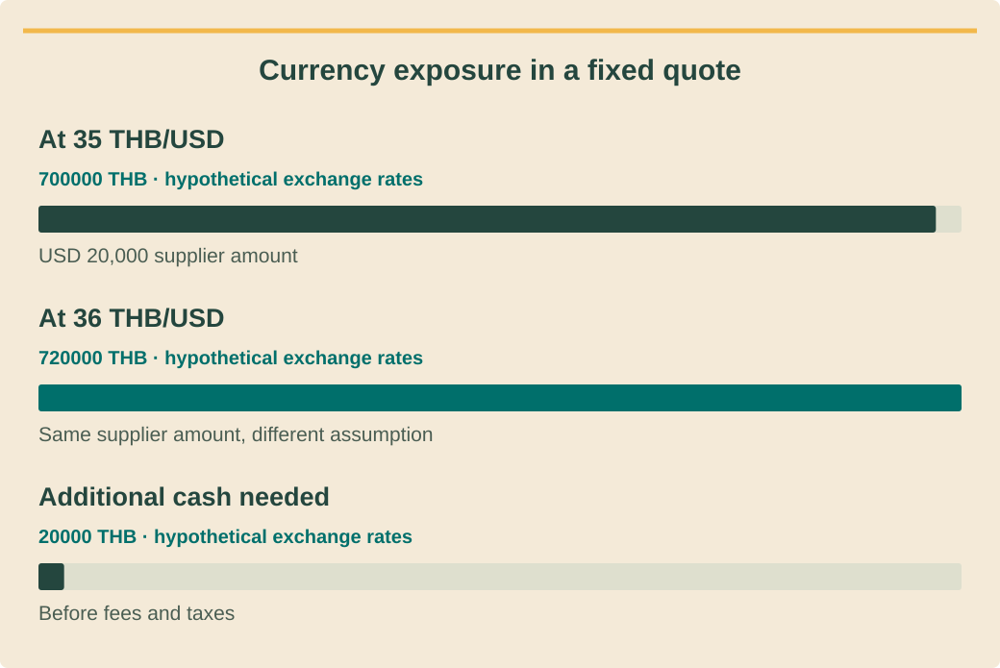

Finance and investment analysisכספים וניתוח השקעותการเงินและวิเคราะห์การลงทุน · 7 / 9
Tax, currency and invoice milestonesמס מטבע ואבני דרך לחשבוניותภาษี สกุลเงิน และงวดใบแจ้งหนี้
Keep tax eligibility, FX exposure and payment timing explicit.להגדיר זכאות מס, חשיפת מטבע ועיתוי תשלומים.ระบุสิทธิภาษี เสี่ยงFX และเวลาจ่ายให้ชัด
What you will be able to doמה תדעו לעשותสิ่งที่คุณจะทำได้
- Separate gross cash payments from economic costs.להפריד תשלום ברוטו מעלות כלכלית.แยกจ่ายเงินรวมจากต้นทุนเศรษฐกิจ
- Document FX assumptions and quote validity.לתעד הנחות מטבע ותוקף הצעה.บันทึกสมมติFXและอายุราคา
- Build an evidence-based invoice schedule.לבנות לוח חשבוניות מבוסס ראיות.ทำตารางใบแจ้งหนี้ตามหลักฐาน
Tax status is an input to verifyמעמד מס הוא קלט לבדיקהสถานะภาษีคือข้อมูลต้องตรวจ
Identify the purchasing legal entity, invoice recipient and relevant registration status before modeling tax recovery. The Revenue Department explains tax invoices and input/output VAT concepts, but an English overview does not settle every current transaction’s treatment. Obtain current, transaction-specific accounting advice.זהו ישות רוכשת, מקבל חשבונית ורישום לפני מודל החזר מס. רשות המס מסבירה חשבוניות ומס תשומות ועסקאות, אך סקירה באנגלית אינה מכריעה כל עסקה עדכנית. השיגו בדיקה חשבונאית פרטנית ועדכנית.ระบุนิติบุคคลซื้อ ผู้รับใบกำกับ และสถานะทะเบียนก่อนจำลองขอคืน กรมสรรพากรอธิบายใบกำกับและภาษีซื้อขาย แต่ภาพรวมอังกฤษไม่ได้ตัดสินทุกธุรกรรมปัจจุบัน ขอผู้บัญชีตรวจตามรายการจริงล่าสุด
Do not assume a universal tax rate, automatic deduction, depreciation schedule or solar incentive. Record each claimed tax benefit with authority, applicability and approval owner. If it remains uncertain, show a case excluding that benefit rather than silently financing the project with it.אל תניחו שיעור מס אחיד, ניכוי אוטומטי, פחת או הטבת סולאר. לכל הטבה מקור, תחולה ומאשר. אם לא הוכרעה, הציגו תרחיש בלעדיה במקום לממן בה את הפרויקט בסתר.อย่าสมมติอัตราภาษีสากล หักได้อัตโนมัติ ตารางเสื่อม หรือสิทธิโซลาร์ ทุกสิทธิต้องมีอำนาจอ้างอิง การใช้ และผู้อนุมัติ หากไม่แน่ให้กรณีไม่รวมสิทธิ ไม่ใช้มันเป็นทุนเงียบๆ
Cash tax and economic cost can differמס במזומן ועלות כלכלית יכולים להיבדלเงินภาษีกับต้นทุนอาจต่าง
A tax-inclusive supplier payment can create an immediate cash need even when part may later be recoverable. Track the recovery separately at a justified date. Do not reduce the initial bank payment to an excluding-tax amount unless the actual invoice/payment structure supports that treatment.תשלום ספק כולל מס יוצר צורך מזומן מיידי גם אם חלק יוחזר. תעדו החזר בנפרד במועד מנומק. אין להקטין תשלום בנק לסכום ללא מס אלא אם מבנה חשבונית ותשלום תומך.จ่ายซัพพลายเออร์รวมภาษีอาจต้องใช้เงินทันทีแม้บางส่วนขอคืนภายหลัง บันทึกคืนแยกวันที่มีเหตุ อย่าลดเงินจ่ายต้นเป็นไม่รวมภาษีหากใบกำกับและวิธีจ่ายจริงไม่รองรับ
The timing rules for goods and services can differ, and contractual milestones do not automatically determine every tax event. Ask the accountant to review deposits, deliveries, service acceptance and invoice issuance. Keep withholding and income-tax assumptions conditional on the actual entity and transaction.כללי עיתוי למוצרים ושירותים עשויים להיבדל, ואבני חוזה אינן קובעות כל אירוע מס. בקשו בדיקת מקדמות, אספקה, קבלת שירות וחשבוניות. ניכוי במקור ומס הכנסה מותנים בישות ובעסקה.เวลาภาษีสินค้าและบริการอาจต่าง งวดสัญญาไม่ได้กำหนดทุกเหตุภาษี ให้บัญชีตรวจมัดจำ ส่งสินค้า รับบริการ และออกใบกำกับ สมมติหักณที่จ่ายและภาษีเงินได้ตามนิติบุคคลกับธุรกรรมจริง
See the ideaרואים את הרעיוןมองเห็นแนวคิด
Currency exposure in a fixed quoteחשיפת מטבע בהצעה קבועהความเสี่ยงค่าเงินในราคาเหมาจ่าย

Read the diagram as textקריאת התרשים כטקסטอ่านแผนภาพเป็นข้อความ
- At 35 THB/USDב־35 באט לדולרที่ 35 บาทต่อดอลลาร์ — USD 20,000 supplier amountסכום ספק: 20,000 דולרยอดผู้ขาย 20,000 ดอลลาร์ · 700000 THB · hypothetical exchange ratesבאט · שערי חליפין היפותטייםบาท · อัตราแลกเปลี่ยนสมมติ
- At 36 THB/USDב־36 באט לדולרที่ 36 บาทต่อดอลลาร์ — Same supplier amount, different assumptionאותו סכום ספק, הנחת מטבע אחרתยอดผู้ขายเดิม สมมติค่าเงินต่างกัน · 720000 THB · hypothetical exchange ratesבאט · שערי חליפין היפותטייםบาท · อัตราแลกเปลี่ยนสมมติ
- Additional cash neededתוספת מזומן נדרשתเงินเพิ่มที่ต้องใช้ — Before fees and taxesלפני עמלות ומסיםก่อนค่าธรรมเนียมและภาษี · 20000 THB · hypothetical exchange ratesבאט · שערי חליפין היפותטייםบาท · อัตราแลกเปลี่ยนสมมติ
FX exposure begins with the currency commitmentחשיפת מטבע מתחילה בהתחייבותเสี่ยงFXเริ่มเมื่อผูกพันสกุล
List currency, amount, due date, quote validity and conversion responsibility for each foreign-currency purchase. A THB customer price and USD supplier obligation create exposure if the exchange rate changes before payment. Record bank charges and spreads when they apply.רשמו מטבע, סכום, מועד, תוקף ואחראי המרה לכל רכש זר. מחיר לקוח בבאט וחוב ספק בדולר יוצרים חשיפה לשינוי לפני תשלום. תעדו עמלות ומרווחי בנק כשחלים.ทุกซื้อเงินต่างประเทศระบุสกุล จำนวน วันจ่าย อายุราคา และผู้แปลง ขายลูกค้าTHBแต่เป็นหนี้ซัพพลายเออร์USDเสี่ยงถ้าอัตราเปลี่ยนก่อนจ่าย บันทึกค่าธรรมเนียมและส่วนต่างธนาคารเมื่อมี
Bank of Thailand daily rates are dated reference evidence, not an executable supplier or bank offer. Use the actual contracted conversion where known and sensitivity otherwise. A hedge or fixed-currency arrangement requires its own verified terms; do not imply one exists because a spreadsheet fixes a rate.שער יומי של בנק תאילנד הוא מקור ייחוס מתוארך ולא הצעה לביצוע. השתמשו בהמרה חוזית כשידועה וברגישות אחרת. גידור או קיבוע דורשים תנאים מאומתים; שער קבוע בגיליון אינו גידור.อัตรารายวันธนาคารแห่งประเทศไทยเป็นข้อมูลอ้างอิงลงวันที่ ไม่ใช่ข้อเสนอซื้อขายจริง ใช้อัตราสัญญาถ้าทราบ มิฉะนั้นทดสอบความไว การป้องกันหรือคงสกุลต้องมีเงื่อนไขยืนยัน ช่องอัตราคงในตารางไม่ใช่เฮดจ์
Tie invoices to reviewable milestonesקישור חשבוניות לאבנים נבדקותผูกใบแจ้งหนี้กับงวดตรวจได้
Create a milestone table showing trigger, evidence, invoice issuer, due date and payment owner. Delivery, installation completion and commissioning are different events. Match customer receipts to supplier commitments and identify gaps before signing; a percentage schedule alone does not explain when cash moves.בנו טבלת אבן עם טריגר, ראיה, מוציא חשבונית, מועד ואחראי תשלום. אספקה, סיום התקנה והפעלה שונים. התאימו תקבולי לקוח לחובות ספק וזהו פערים לפני חתימה; אחוזים לבדם אינם עיתוי.ทำตารางงวด เหตุเริ่ม หลักฐาน ผู้ออกใบ วันครบ และผู้จ่าย ส่งของ ติดเสร็จ และทดสอบเป็นคนละเหตุ จับรับลูกค้ากับจ่ายผู้ขายหาช่องก่อนเซ็น ตารางเปอร์เซ็นต์อย่างเดียวไม่บอกเวลาเงิน
If scope changes, update the commercial amount, tax review and payment schedule together. Preserve the original and revised versions. Do not recognize an unapproved change order as collected cash or assume the customer will pay before acceptance evidence exists.אם היקף משתנה, עדכנו סכום, בדיקת מס ולוח תשלום יחד. שמרו מקור וגרסה חדשה. אין להכיר בשינוי לא מאושר כמזומן שהתקבל או להניח תשלום לפני ראיית קבלה.เมื่อขอบเขตเปลี่ยนปรับยอด ตรวจภาษี และตารางจ่ายพร้อมกัน เก็บเดิมกับแก้ อย่านับงานเพิ่มที่ยังไม่อนุมัติเป็นเงินรับ หรือสมมติลูกค้าจ่ายก่อนมีหลักฐานรับ
Worked exampleדוגמה פתורהตัวอย่างพร้อมวิธีทำ
A USD equipment commitmentהתחייבות ציוד בדולרภาระซื้อเครื่องUSD
Training supplier amountUSD 20,000. Compare illustrative 35 and 36 THB/USD; neither is asserted as today’s exchange rate. Fees and tax excluded.ספק לתרגול20,000 דולר. השוו35 ו־36 באט לדולר; אף אחד אינו נטען כשער היום. ללא עמלות ומס.ยอดฝึกUSD20,000 เทียบสมมติ35และ36THB/USD ไม่อ้างว่าเป็นอัตราวันนี้ ไม่รวมค่าธรรมเนียมและภาษี
- At 35, payment=20,000×35=THB 700,000.בשער35 תשלום700,000 באט.ที่35จ่าย20,000×35=700,000บาท
- At 36, payment=THB 720,000.בשער36 תשלום720,000.ที่36จ่าย720,000บาท
- Unhedged increase=THB 20,000 before any fees.התייקרות ללא גידור20,000 לפני עמלות.เพิ่มหากไม่ป้องกัน20,000ก่อนค่าธรรมเนียม
A fixedTHB sales price absorbs this increase unless an approved contract allocates it differently. The model should show exposure, not pretend an assumed rate locks the purchase price.מחיר מכירה קבוע בבאט סופג עלייה אלא אם הסכם מאושר מחלק אחרת. המודל מציג חשיפה ואינו מעמיד פנים ששער הנחה נועל מחיר.ราคาขายTHBคงที่ต้องรับส่วนเพิ่มเว้นสัญญาอนุมัติจัดสรรต่าง โมเดลต้องแสดงเสี่ยงไม่แสร้งว่าอัตราสมมติล็อกราคาซื้อ
Your turnעכשיו מתרגליםถึงเวลาฝึกฝน
Delayed tax recoveryהחזר מס מאוחרคืนภาษีล่าช้า
A fictional accountant-approved model identifies a recoverable tax amountT paid with equipment at month 1 and recovered at month 4. Describe the cash treatment without assuming a numeric rate.מודל לדוגמה שאושר חשבונאית מזהה מס בר־החזרT המשולם בחודש1 ומוחזר בחודש4. תארו מזומן בלי להניח שיעור מס.โมเดลสมมติบัญชีอนุมัติว่าภาษีTขอคืนได้ จ่ายพร้อมเครื่องเดือน1คืนเดือน4 อธิบายเงินโดยไม่สมมติอัตรา
- A monthly gross-payment/recovery schedule.לוח תשלום ברוטו והחזר חודשי.ตารางจ่ายรวมและคืนรายเดือน
- A list of accountant confirmations.רשימת אישורים חשבונאיים.รายการยืนยันจากบัญชี
Compare with the model answerהשוו לפתרון לדוגמהเปรียบเทียบกับแนวคำตอบ
Pay the full gross invoice in month 1, includingT; show a separateT receipt in month 4 only if eligibility and timing are evidenced. The temporary funding need includesT. Confirm entity, invoice validity, actual recovery mechanism and delay sensitivity. If unverified, retain a no-recovery case.משלמים מלוא חשבונית בחודש1 כוללT; מציגים תקבולT נפרד בחודש4 רק עם ראיות זכאות ומועד. צורך מימון זמני כוללT. אמתו ישות, חשבונית, מנגנון ורגישות לעיכוב; אם לא מאומת, השאירו ללא החזר.จ่ายใบเต็มเดือน1รวมT แสดงรับTแยกเดือน4เฉพาะมีหลักฐานสิทธิและเวลา ต้องหาเงินชั่วคราวรวมT ตรวจนิติบุคคล ใบกำกับ วิธีคืนจริง และผลล่าช้า ถ้าไม่ยืนยันเก็บกรณีไม่คืน
Your exercise notebookמחברת התרגול שלכםสมุดแบบฝึกหัดของคุณ
Write your reasoning and the evidence you would collect. Notes stay in this browser. Export a copy to share with your trainer.כתבו את דרך החשיבה ואת הראיות שתאספו. המחברת נשמרת בדפדפן הזה. הורידו עותק כדי להעביר לבדיקה של אחראי ההדרכה.เขียนเหตุผลและหลักฐานที่จะรวบรวม บันทึกเก็บในเบราว์เซอร์นี้ ส่งออกสำเนาเพื่อส่งให้ผู้ฝึกสอนตรวจ
Before handing overלפני שמעבירים הלאהก่อนส่งมอบงาน
- Validate tax status and invoice recipient.לאמת מעמד מס ומקבל חשבונית.ตรวจสถานะภาษีและผู้รับใบ
- Separate reference FX from contracted rates.להפריד שער ייחוס משער חוזי.แยกFXอ้างอิงกับสัญญา
- Model gross cash and recovery dates.למדל ברוטו ותאריכי החזר.จำลองจ่ายรวมและวันคืน
Watch and applyצופים ומיישמיםดูแล้วนำไปใช้
A professional demonstrationהדגמה מקצועיתการสาธิตจากผู้เชี่ยวชาญ
Before pressing playלפני שמפעיליםก่อนกดเล่น
Focus on why the date of a payment matters when comparing money across time.התמקדו בחשיבות מועד התשלום בהשוואת כסף בין מועדים.เน้นว่าทำไมวันจ่ายจึงสำคัญเมื่อเปรียบเทียบเงินต่างเวลา
Introduction to present value | Interest and debt | Finance & Capital Markets | Khan Academy
Sal Khan introduces discounting money received at different times. Example discount rates illustrate the method; they are not recommendations for this project.סאל קהאן מציג היוון של כסף המתקבל במועדים שונים. שיעורי ההיוון בדוגמה מדגימים שיטה, ואינם המלצה לפרויקט הזה.Sal Khan แนะนำการคิดลดเงินที่ได้รับต่างเวลา อัตราคิดลดในตัวอย่างใช้อธิบายวิธี ไม่ใช่อัตราที่แนะนำสำหรับโครงการนี้
Connect it to this lessonמחברים לחומר בשיעורเชื่อมกับบทเรียนนี้
First define the currency amount and payment date; assess FX and tax separately.תחילה מגדירים סכום מטבע ומועד תשלום; בודקים מט״ח ומס בנפרד.กำหนดยอดสกุลเงินและวันจ่ายก่อน แล้วประเมินค่าเงินและภาษีแยก
Pause and explainעוצרים ומסביריםหยุดแล้วอธิบาย
Which invoice milestone sets the date of this foreign-currency cash obligation?איזו אבן דרך בחשבונית קובעת את מועד התחייבות המזומן במטבע הזר?งวดใบแจ้งหนี้ใดกำหนดวันที่ต้องจ่ายเงินต่างประเทศนี้?
The guidance is available in all three languages. The video keeps the publisher’s original audio; captions and translations depend on the publisher and YouTube. If the embedded player is unavailable, use the source link.הנחיות הצפייה זמינות בשלוש השפות. הסרטון נשאר בשפת המקור; כתוביות ותרגום תלויים במפרסם וב־YouTube. אם הנגן אינו זמין, פתחו את קישור המקור.คำแนะนำมีครบสามภาษา วิดีโอใช้เสียงต้นฉบับ คำบรรยายและการแปลขึ้นกับผู้เผยแพร่และ YouTube หากเครื่องเล่นใช้ไม่ได้ให้เปิดลิงก์ต้นฉบับ
Check your understanding · 80% to passבדיקת הבנה · ציון מעבר 80%ตรวจความเข้าใจ · ผ่านที่ 80%
Sources and review datesמקורות ותאריכי בדיקהแหล่งข้อมูลและวันที่ตรวจสอบ
- Value Added Tax
Tax-invoice and VAT concepts; current entity-specific treatment requires verification.עקרונות חשבונית ומע״מ; טיפול עדכני לפי ישות דורש אימות.แนวคิดใบกำกับและVAT ต้องตรวจการใช้ปัจจุบันตามนิติบุคคล
- Daily Foreign Exchange Rates
Dated FX reference data, not an executable quote, hedge or forecast.נתוני ייחוס מטבע מתוארכים ולא הצעה לביצוע, גידור או תחזית.ข้อมูลFXอ้างอิงลงวันที่ ไม่ใช่ราคาซื้อขายจริง เฮดจ์ หรือคาดการณ์
- SAM Financial Models
Financial modeling perspectives; replace US defaults with verified project inputs.נקודות מבט במודל כספי; להחליף ברירות מחדל אמריקאיות בקלט מאומת.มุมโมเดลการเงิน แทนค่าตั้งต้นสหรัฐด้วยข้อมูลโครงการยืนยัน
Reading and quizzes build knowledge. Field work and practical sign-off require the responsible qualified professional.קריאה וחידונים בונים ידע. עבודת שטח ואישור כשירות מעשית נעשים בהנחיית בעל המקצוע המוסמך והאחראי.การอ่านและแบบทดสอบสร้างความรู้ งานภาคสนามและการรับรองความสามารถปฏิบัติต้องอยู่ภายใต้ผู้เชี่ยวชาญที่มีคุณสมบัติและรับผิดชอบ